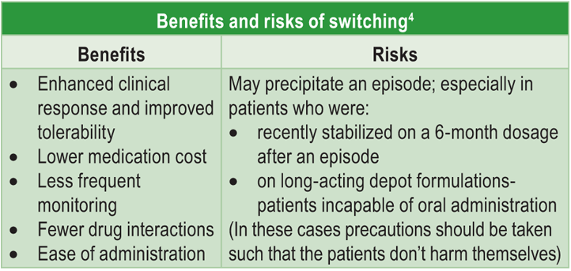

The duration and response of past treatment along with treatment and stabilization doses should be reviewed when deciding to switch an antipsychotic. Also the patient’s compliance with treatment should be reviewed. While analyzing the reasons for switching, the patient’s, family’s, and carer’s expectations and attitudes must also be considered.3It is important to educate the patient, family, and carer regarding the switch and the possible effects. An evaluation of the current symptoms needs to be done with an understanding of the patient’s and family’s expectations of the new medications. The family should be educated on how to identify and act in case of withdrawal symptoms or newer side effects.3
The switch procedure needs to be managed and timed carefully as there is no set protocol for conducting the switch (Figure 1)
In the initial phase after the switch, frequent monitoring is essential to identify and treat any exacerbations of symptoms, withdrawal symptoms, and side effects. In case of withdrawal syndromes such as rebound parkinsonism, anticholinergic medications need to be continued for a few weeks.3 After a specified time frame (6 to 12 weeks), the effect of the newer drug and its therapeutic benefits may be appreciated.1,3  The improvement in symptoms and side effects are assessed using subjective feedback from the patient, family, clinician, as well as rating scales.1
- Introduction
- Indications and contraindications of switching antipsychotic drugs1,3
- Principles of the practice of switching
- Switching to amisulpride
- Amisulpride vs risperidone as a switch option
- Conclusion
- References